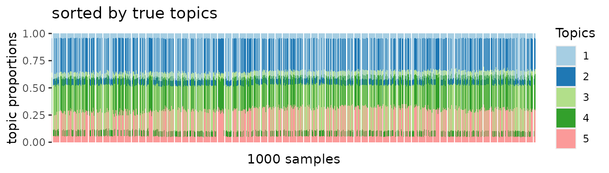
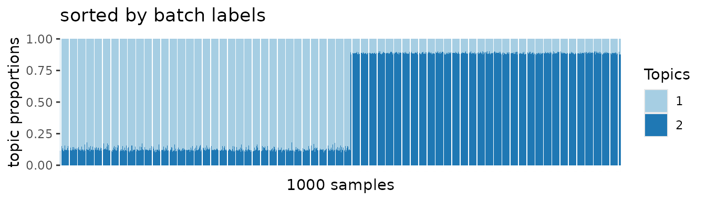
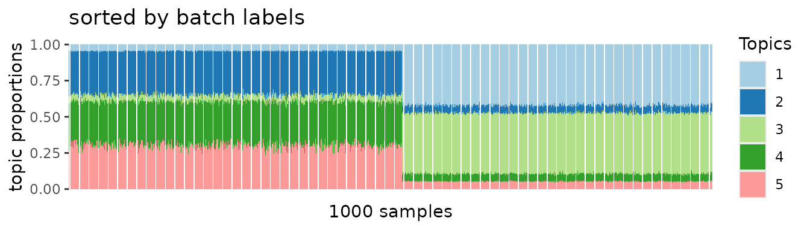
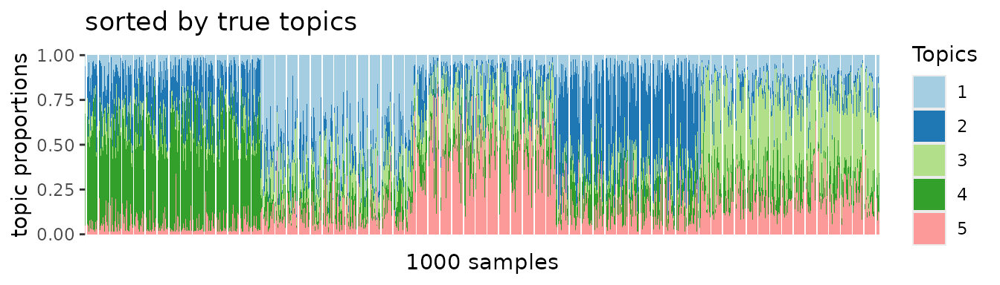
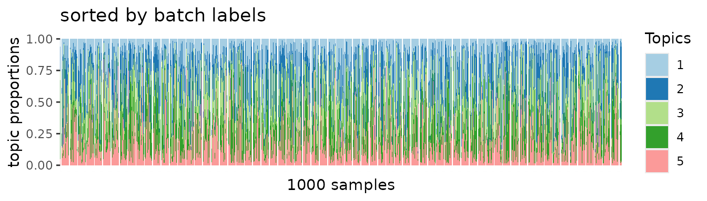

3. Batch correction incorporated in ASAP
Yongjin Park
note_batch_correction_2_asap.RmdA generative scheme for a single-cell count matrix with multiplicative batch effects
For each gene and cell , the gene expression were sampled from Poisson distribution with the rate parameter:
affected by the batch effects . Letting be a batch membership matrix, assigning a cell to a batch if and only if , we assume the average gene expression rates are linearly affected by in the log-transformed space:
library(ggplot2)
set.seed(1331)
m <- 500 # genes
n <- 1000 # cells
nb <- 2 # batches
## 1. batch membership
X <- matrix(0, n, nb)
batch <- sample(nb, n, replace = TRUE)
for(b in 1:nb){
X[batch == b, b] <- 1
}
## 2. batch effects
W.true <- matrix(rnorm(m*nb), m, nb)
ln.delta <- apply(W.true %*% t(X), 2, scale)
## 3. true effects
K <- 5
.beta <- matrix(rgamma(m * K, 1), m, K)
.theta <- matrix(rgamma(n * K, 1), n, K)
lambda.true <- .beta %*% t(.theta)
kk <- kmeans(log1p(.theta), 3, nstart=100)$cluster
lambda <- lambda.true * exp(ln.delta)
yy <- apply(lambda, 2, function(l) sapply(l, rpois, n=1))
oo <- order(apply(t(.theta), 2, which.max))
library(asapR)
y.data <- lapply(1:nb, function(b) yy[, batch == b, drop = F])
y.data <- lapply(y.data, function(y) Matrix::Matrix(y, sparse = T))First, we can construct pseudo bulk profiles without considering batch labels, hoping that Poisson Matrix Factorization (PMF) method on the pseudo bulk data could identify meaningful topic-specific frequency patterns.
pb.out <- asap_random_bulk_cbind(y.data, num_factors = 9, do_batch_adj = F)
pmf.out <- asap_fit_pmf(pb.out$PB, maxK=5)
stat0 <- asap_pmf_regression(Matrix::Matrix(yy, sparse=T),
log_beta = pmf.out$log.beta,
beta_row_names = pb.out$rownames,
do_stdize_beta = T, do_stdize_r = T,
verbose = T)We can explicitly incorporate experimental designs to the pseudo bulk data construction so that the we can deconfound batch effects and the resulting average matrix.
pb.out <- asap_random_bulk_cbind(y.data, num_factors = 9)
pmf.out <- asap_fit_pmf(pb.out$PB, maxK=5)
stat1 <- asap_pmf_regression(Matrix::Matrix(yy, sparse=T),
log_beta = pmf.out$log.beta,
beta_row_names = pb.out$rownames,
r_log_delta = pb.out$log.batch.effect,
do_stdize_beta = T, do_stdize_r = T,
verbose = T)
stat.b <- asap_pmf_regression(Matrix::Matrix(yy, sparse=T),
log_beta = pb.out$log.batch.effect,
beta_row_names = pb.out$rownames,
do_stdize_beta = T, do_stdize_r = T,
verbose = T)Naive PMF analysis
topic0 <- pmf2topic(stat0$beta, stat0$theta)
plot.struct(topic0$prop, oo) +
ggtitle("sorted by true topics")
When we sorted samples by true topic patterns, block structures should emerge if the PMF algorithm was applied to unbiased data. However, no apparent block patterns emerge.
topic.batch <- pmf2topic(stat.b$beta, stat.b$theta)
plot.struct(topic.batch$prop, order(batch)) +
ggtitle("sorted by batch labels")
Instead, we found batch-specific patterns dominate the overall PMF results.

After adjusting batch-specific effects
On the other hand, we can recapitulate true topic-specific block structures from the deconfounded data. This was clearly demonstrated in the following PMF results.
topic1 <- pmf2topic(stat1$beta, stat1$theta)
plot.struct(topic1$prop, oo) +
ggtitle("sorted by true topics")
Yet, we do not see any batch-specific effects.
